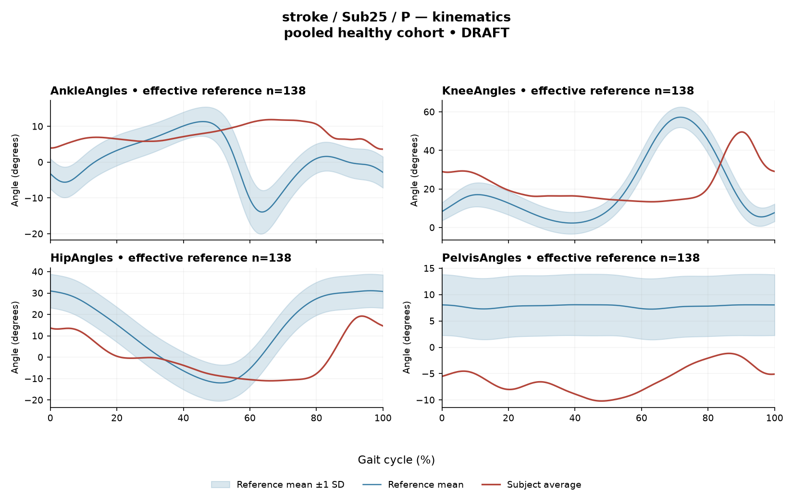

rater1 / Report 27 of 105 / Review spreadsheet row 28
RBF92630356E55FE7
Case: stroke_Sub25_P
Read this report independently. Record judgments in the workbook. Browser pages do not save ratings.
Report: exact saved text
# Gait Report Interpretation — Sub25_P **Version: limited-evidence-v3.1-candidate | Research interpretation, limited evidence. Not a diagnosis and not a basis for treatment selection.** --- ## 1. Objective Findings **Participant and side.** Sub25_P is a member of the stroke cohort. All data summarized here are from the **paretic side**. The released cycle for this limb runs from one initial contact of that limb (0%) to the next initial contact (100%); these are two successive occurrences of the same event, not one instant. No intermediate event (including individual toe-off) or phase boundary is supplied, so all timing below is expressed strictly as a percentage of the analysis cycle. **Spatiotemporal values as supplied.** - Gait speed 0.11 m/s, falling in the "household ambulator (<0.4 m/s)" speed band. This label denotes a speed band only; it does not measure walking independence, safety, or real-world community mobility, and nothing here characterizes those. - Cadence 33.6 steps/min. - Step length symmetry index +8.6% (successive-footfall definition). By the stated formula, a positive value corresponds to a **longer paretic step** than the non-paretic step. The alternative instantaneous definition can yield a different value for some subjects; only the successive-footfall value is supplied here. **Reference comparability — central limitation.** The deviation reference actually used for this subject is a pooled cohort of 138 healthy subjects (1001 phase points, source: main_cohort_excel), not age- or speed-matched. The healthy cohort's self-selected speeds span 0.80–1.79 m/s. At 0.11 m/s this subject is **far below that floor**, so **no speed-matched healthy reference exists in this dataset**. Every deviation reported below therefore conflates the effects of extremely slow walking (and the associated cadence) with any stroke-related control changes; these two contributions cannot be separated from these data. Deviations from the reference should be read as differences from an empirical, non-matched reference — they do not by themselves establish a disease effect, a mechanism, or a clinical diagnosis. This limitation applies to the whole report and is not restated in every line. **Channels available / not supplied.** Sagittal-plane kinematics are provided for ankle, knee, hip and pelvis; coronal and transverse planes are not included in this input. EMG envelopes are provided for seven muscles on the paretic side (GAS, RF, VL, BF, ST, TA, ERS). Not supplied in this task: individual toe-off and other gait events, matched muscle-specific normal timing references, stride-level variability, raw-signal quality checks, expert plots, non-paretic-side EMG, age, sex, time post-stroke, and stroke clinical scores. Items not supplied here must not be described as absent from the source dataset — they are simply outside this input. --- ## 2. EMG Envelope and Threshold Findings **How these numbers must be read.** All EMG results are properties of the **ensemble-averaged envelope** for each muscle, normalized to a shared maximum across available strides (participant-, side- and muscle-specific denominator; not shared between sides) and then averaged. Detected intervals are the regions where that averaged curve exceeds **20% of its own peak**, with a minimum retained interval of 3% of the cycle. These are algorithmic threshold-crossing regions on a mean curve — they are **not** physiological onset, offset, burst duration, continuous contraction, or proof of inactivity outside the intervals, and they do not demonstrate that the same pattern occurs in every individual stride. Amplitudes are relative envelope values: they are not neural activation, force or strength, and muscles must not be ranked as stronger or weaker from them. An onset written as 0% is the analysis-window boundary. Timing cannot be called normal, early, delayed or prolonged, because no matched muscle-specific timing reference is supplied. | Muscle | Retained interval(s) | Coverage | Boundary | Peak norm. amp. | Max \|z\| (location) | |---|---|---|---|---|---| | GAS | 3%–2% (wraps) | 99% | above threshold across cycle boundary | 0.37 | 12.1 above reference, at 77% | | RF | 97%–77% (wraps) | 86% | above threshold across boundary | 0.65 | 6.9 above reference, at 38% | | VL | 98%–76% (wraps) | 77% | above threshold across boundary | 0.53 | 5.8 above reference, at 52% | | BF | 80%–84%; 90%–65% (wraps) | 81% | above threshold across boundary | 0.48 | 3.8 above reference, at 47% | | ST | 76%–75% (wraps) | 99% | above threshold across boundary | 0.37 | 4.9 above reference, at 42% | | TA | 84%–95%; 95%–70% (wraps) | 89% | above threshold across boundary | 0.60 | 9.9 above reference, at 33% | | ERS | 0%–100% | 100% | above threshold across boundary | 0.46 | 4.5 above reference, at 28% | **Coverage and continuity.** At the mean-envelope level, every recorded muscle shows high above-threshold coverage (77%–100%) and remains above threshold across the cycle-defining boundary. ERS is reported as a single interval spanning the full analysis window with 100% coverage; the displayed precision is rounded, so this should be read as the reported value rather than as a verified claim about hidden unrounded data. For GAS and ST (99%), and for all other muscles, the supplied evidence does **not** establish that there was no below-threshold segment — a rounded coverage figure alone cannot support that statement. BF shows two retained intervals (80%–84% and the wrapping 90%–65%), and TA shows two (84%–95% and the wrapping 95%–70%), i.e. the retained regions are not one contiguous block on the mean curve; the regions between them were simply not retained under the threshold-plus-duration rule and cannot be described as periods of inactivity. No interval may be mapped to stance, swing, loading response, pre-swing, mid-stance, clearance, push-off or weight acceptance, and no conventional 60% split is applied. Anatomical actions may be named (e.g. GAS as an ankle plantarflexor, TA as a dorsiflexor, RF/VL as knee extensors, BF/ST as knee flexors/hip extensors, ERS as an erector spinae channel), but this carries no functional-phase claim here. **Max |z| interpretation.** Max |z| is an **extreme-value statistic** — the largest standardized difference from the phase-specific reference mean across 1001 phase points — not a single-observation z-score, and the conventional 2-SD rule does not apply. In this dataset all 109 healthy controls exceed |z| = 2 on at least one muscle, and per-muscle healthy 95th percentiles for this statistic run 3.65 (ERS) to 4.61 (TA), higher still under leave-one-out. Against the supplied per-muscle values: **TA 9.9 exceeds its own supplied 95th percentile of 4.61**, and **ERS 4.5 exceeds its own supplied 95th percentile of 3.65**. For GAS, RF, VL, BF and ST the individual per-muscle percentiles are not supplied, only the 3.65–4.61 span; on that basis GAS (12.1), RF (6.9), VL (5.8) and ST (4.9) lie above the upper end of that span, while **BF (3.8) falls inside the span and cannot be classified** either way. Each location (e.g. GAS at 77%, TA at 33%) marks where the standardized difference from the non-matched reference is largest — **not** necessarily the time of peak envelope amplitude and not a gait event. "Above reference" means above the phase-specific reference mean at that point, not above a healthy percentile limit. Because the pooled reference is neither speed- nor age-matched, these values quantify difference from that reference only. **Co-contraction indices.** CCI here is the Falconer–Winter index computed on the full continuous normalized envelopes over the whole cycle (2 × common area / summed areas). It is a whole-cycle overlap index — not simultaneous activation time, not muscular force, not phase-specific, and it can be non-zero even when detected intervals do not overlap, because sub-threshold activity contributes. It is also method-dependent (normalization and envelope pipeline), so values and thresholds from other studies or algorithms do not transfer. - **TA vs GAS = 0.71**, above the supplied healthy median of 0.39 and above the upper endpoint of the supplied 2.5th–97.5th interval (0.24–0.59). - **RF vs BF = 0.76**, above the supplied healthy median of 0.68 and within the supplied interval (0.48–0.83), lying nearer its upper endpoint. Being inside that interval does not establish physiologically normal co-activation or normal muscle function; being outside it does not establish pathological co-activation, spasticity, stiffness, impaired motor control or any diagnosis. The same non-matched-reference and speed limitations apply. --- ## 3. Kinematic and Reference Comparisons All values are **sagittal plane only**; no coronal or transverse data are included, so no statement can be made about those planes. | Joint (sagittal) | ROM | Gait Variable Score | |---|---|---| | Ankle | 8.3° | 10.66 | | Knee | 36.2° | 22.02 | | Hip | 30.2° | 16.78 | | Pelvis | 9.0° | 14.13 | **Composite (GPS-like) = 16.43.** This is the RMS of the per-joint GVS values across the four supplied sagittal channels — it is a "GPS-like" composite, not the validated 9-variable GPS. Against the supplied composite reference (median 5.1, 95th percentile 10.7), this subject's value is **above the 95th percentile**. That reference is a **pooled calibration percentile**, not a matched leave-one-out normal limit, and the deviation reference used here (138 pooled healthy subjects) is not matched for speed or age. Given a walking speed of 0.11 m/s — well below the reference cohort's 0.80 m/s floor — the elevated composite and the individual GVS values quantify the magnitude of difference from that reference, with slow-walking effects and any stroke-related changes inseparably combined. They do not localize waveform direction (e.g. more flexion vs more extension), do not identify the phase at which differences occur, and do not establish a disease effect or clinical diagnosis. By magnitude, the knee GVS (22.02) is the largest of the four supplied channels, followed by hip (16.78), pelvis (14.13) and ankle (10.66). This ordering describes summary difference from the reference only. **ROM.** The supplied ROM values are descriptive. ROM alone does not establish a clinical restriction in the absence of an appropriate matched comparison, and no matched ROM norms are supplied here; in particular, the ankle value of 8.3° should not be labelled a contracture, restriction or limitation on this evidence. Step length symmetry (+8.6%, longer paretic step by the stated convention) is likewise reported as a measured asymmetry direction, without attribution of cause. --- ## 4. Questions for Further Clinical Assessment These are open questions for the treating clinician, posed without presupposing that any listed mechanism or measurement issue has been observed. No treatment is recommended. 1. **Speed and comparability:** Is a within-subject or slow-speed-matched comparison obtainable (e.g. repeat testing, or a reference set extending below 0.80 m/s), so that differences from the pooled cohort can be interpreted with less confounding by the very low walking speed and cadence? 2. **Event timing:** Can individual gait events (toe-off in particular) and matched muscle-specific timing references be retrieved from the release for this subject? Without them, no interval here can be assigned to a gait phase or characterized as early, delayed or prolonged. 3. **Envelope-level continuity:** Would inspection of the underlying mean envelopes and, where available, stride-level data help determine whether the high above-threshold coverage across all seven muscles reflects a genuinely sustained envelope profile, or is influenced by the normalization denominator, envelope smoothing, the 20% threshold, or low-amplitude/low-peak curves at this walking speed (GAS and ST peak normalized amplitudes are 0.37)? 4. **Signal quality:** Are raw-signal quality checks, electrode placement notes, and any evidence of crosstalk (e.g. between adjacent shank or thigh channels) available for review? Such checks are outside this input and their status is unknown here. 5. **Contralateral and multiplanar data:** Are non-paretic-side EMG and coronal/transverse kinematics available, to place the paretic-side findings in a within-subject context? Note that EMG normalization denominators are side-specific in this release, which constrains direct between-side amplitude comparison. 6. **Clinical context:** Are age, time post-stroke, stroke clinical scores, assistive device use, orthotic use and examination findings available to the interpreting clinician? None of these are supplied in this task, and the quantitative summary alone cannot substitute for them. 7. **Composite score follow-up:** Would a leave-one-out or otherwise matched normal limit for the GPS-like composite and per-joint GVS be obtainable, given that the supplied 95th percentile is a pooled calibration value rather than a matched limit?
Requirements for this report
Fill the corresponding Coverage rows in the workbook. G03 is included once. These are the approved requirements, not prefilled judgments.
| Excel row | ID | Required content | Components / optional content |
|---|---|---|---|
| 141 | R073 | Describe walking speed 0.11 m/s and that it is below the stated 0.80 m/s reference floor; no reference at this speed is supplied. | AND: displayed speed and that it lies below the 0.80 m/s reference floor, so no speed-supported healthy reference exists in this dataset. Optional: cadence, speed-band label (not a functional claim). One sentence may also serve the comparability half of G03. |
| 142 | R074 | Identify the knee as the leading GVS difference AND describe another proximal difference using hip OR pelvis. Exact GVS values are optional; identify the findings as reference-relative sagittal summary differences. | AND: knee as leading AND (hip OR pelvis). Stating which joint is larger is optional; asserting the reverse order is an error. Exact GVS values are optional; no waveform direction, phase or restriction is required. No pelvic offset or restriction inference. |
| 143 | R075 | Describe GAS envelope above its phase-specific reference mean at approximately 77% of the analysis cycle (displayed max |z| 12.1). Within each route, muscle identity AND mean-relative direction AND approximate cycle location are required. Exact max-|z| repetition is optional. | Required for each route: muscle identity AND direction relative to the phase-specific reference mean AND approximate cycle location. Optional: exact max |z| value, comparison with the supplied endpoint span (descriptive only). Prohibited: percentile classification, gait phase, physiological onset, severity. |
| 144 | R076 | Describe TA envelope above its phase-specific reference mean at approximately 33% of the analysis cycle (displayed max |z| 9.9). Within each route, muscle identity AND mean-relative direction AND approximate cycle location are required. Exact max-|z| repetition is optional. | Required for each route: muscle identity AND direction relative to the phase-specific reference mean AND approximate cycle location. Optional: exact max |z| value, comparison with the supplied endpoint span (descriptive only). Prohibited: percentile classification, gait phase, physiological onset, severity. |
| 145 | R078 | Describe the supplied successive-footfall step-length index 8.6% and its meaning: the paretic step is longer. | AND: displayed index and the direction supported by its sign. Optional: formula, definition wording. Acceptable phrasing for small displayed values: "a small difference with the paretic step slightly shorter/longer" (not a cutoff). Prohibited: restating the index as a percentage shortening (E01), severity grades, whole-gait symmetry generalization (E07 issue, not an omission). |
| 146 | G03 | Express a meaningful limitation of reference comparability AND why the comparison cannot establish disease effects or clinical diagnosis; for controls it cannot establish disease or overall normality. One statement may also support a case requirement. | AND: comparability and inference limitations |
Exact model input: system instruction
Draft a research gait-report interpretation for a physical therapist or physiatrist using only the supplied quantitative summary. This is a limited-evidence interpretation task, not diagnosis or treatment selection. Rules: - Describe the participant's actual group and side, available findings, and missing channels accurately. Healthy-group membership does not prove normal physiology; deviations from an empirical reference do not by themselves establish disease. - Treat detected EMG intervals and coverage as properties of an averaged envelope under the stated threshold and duration rule. Do not convert them into physiological onset, offset, duration, continuous contraction, or inactivity outside the intervals. You may describe reported coverage, retained intervals and boundary continuity at the mean-envelope level. Do not infer the same pattern in every individual stride. Say no below-threshold segment only when the supplied evidence establishes that; a rounded coverage value or no retained interval alone does not establish it. - Individual toe-off and matched muscle-specific timing references are not supplied in this task. Use percentages of the analysis cycle. When the input explicitly identifies an initial-contact boundary, you may name that boundary or describe numerical proximity to it. Do not assign stance/swing, loading response, pre-swing, mid-stance or another event to a percentage, or substitute a conventional 60% split. Anatomical muscle actions may be named, but do not map an interval to a gait-phase function such as clearance, push-off or weight acceptance. Do not characterize timing as normal, early, delayed or prolonged without the required evidence. - Respect the supplied normalization method. Relative envelope amplitude is not strength or force, and average curves do not establish stride-to-stride variability. - Report CCI as a whole-cycle overlap index of normalized EMG envelopes. You may compare it with the supplied empirical interval or a supplied median, including proximity to an endpoint. Do not invent an unavailable median. Being within that interval does not establish physiologically normal co-activation or normal muscle function; being outside it does not establish pathological co-activation, stiffness, impaired control or a diagnosis. CCI is not simultaneous activation time, muscular force or a phase-specific result. It depends on normalization and envelope methods; do not transfer values or thresholds from other studies or algorithms. - Describe GVS and GPS-like as summary differences from the stated reference. Neither localizes waveform direction or phase; ROM alone does not establish a clinical restriction without an appropriate comparison. Do not treat pooled calibration percentiles as matched leave-one-out normal limits. - Where using a reference comparison, convey both limited comparability and the inability to establish a disease effect or clinical diagnosis from that comparison. One clear explanation per report is enough; age and speed need not be recited as separate checklist words. A speed inside an overall range does not prove that an appropriate matched reference exists. Apply these limits to controls as well. - The location of maximum |z| is the largest standardized difference from the reference, not necessarily the time of peak envelope amplitude or a gait event. Above/below reference in an EMG row means relative to the phase-specific reference mean at that location, not relative to a healthy percentile limit. - Preserve numerical direction and the displayed precision. Do not invent values, clinical severity grades, statistical significance, or unavailable reference values. Descriptive comparisons with supplied values remain allowed. Near-boundary rounded values do not justify classifying hidden unrounded values. - Clinical follow-up questions may ask whether a mechanism or measurement issue exists; do not presuppose it has already been observed. Do not recommend treatment. If EMG is unavailable, section 2 may simply state that envelope timing, amplitude and CCI cannot be assessed. Reference-only plots do not provide patient EMG. Use exactly these four sections: 1. Objective Findings 2. EMG Envelope and Threshold Findings 3. Kinematic and Reference Comparisons 4. Questions for Further Clinical Assessment
Exact model input: case summary
Candidate interpretation version: limited-evidence-v3.1-candidate
Draft the four-section report using only this subject's supplied evidence.
Metric definitions (read before interpreting any number below):
- All joint angles and ROM values are SAGITTAL PLANE only. Coronal/transverse data are not included.
- The released EMG curves are ensemble-averaged envelopes. For each participant and recorded muscle, normalization uses a shared maximum across the available strides before averaging; individual strides are not independently rescaled to their own peaks. This pipeline uses the released mean curves without further amplitude normalization. In the checked stroke release, the denominator is participant-, side-, and muscle-specific; it is not shared between sides. The local array audit verified 614 evaluable combinations, not all 700; 86 lacked valid nonzero paired samples. Amplitudes are relative envelope values, not absolute neural activation, force, or strength. Do not rank muscles as stronger or weaker from these amplitudes, or infer stride-to-stride variability from an average curve.
- Above-threshold intervals are the regions where the averaged envelope exceeds 20% of that curve's own peak, minimum retained interval 3% of the cycle (by sample count). An interval written as (X%-Y%) with X > Y wraps across the 100%->0% cycle boundary (envelope remains above threshold across the cycle-defining event). An onset of 0% is the analysis-window boundary, not necessarily a physiological onset. "No interval detected" means no region met the threshold + duration criteria; it does NOT mean the muscle is inactive or non-functional.
- CCI is the Falconer-Winter co-contraction index computed on the full continuous envelopes (2*common area / summed areas), so it can be non-zero even when the DETECTED burst intervals of the pair do not overlap (sub-threshold activity contributes).
- The composite kinematic deviation score is the RMS of the per-joint Gait Variable Scores over the sagittal channels provided ("GPS-like", not the validated 9-variable GPS).
- Step length symmetry index: 200*(paretic - non-paretic)/(paretic + non-paretic), in %. NEGATIVE means the paretic-side step is SHORTER. Two operational step-length definitions exist (successive-footfall: each heel's position at its own initial contact; instantaneous: both heels at the same instant) and give different values for some subjects -- the definition actually used is stated next to the symmetry value.
- "Max |z| deviation" is the LARGEST absolute z-score across all 1001 phase points of the cycle, comparing this curve to the healthy-cohort mean/SD at each phase. This is an extreme-value statistic, NOT a single-observation z-score: in this dataset every one of 109 healthy controls exceeds |z| = 2 on at least one muscle, and per-muscle healthy 95th percentiles for this statistic run 3.65 (ERS) to 4.61 (TA) -- higher still under leave-one-out. Do not label a value abnormal by the conventional 2-SD rule; use the healthy reference range given per muscle where provided.
- Healthy-cohort CCI reference (this dataset): RF-vs-BF median 0.68 (2.5th-97.5th pct 0.48-0.83); TA-vs-GAS median 0.39 (0.24-0.59). Composite score reference: median 5.1, 95th percentile 10.7.
- COHORT BACKGROUND (calibration context, not necessarily the exact reference used for this subject -- the actual reference composition is stated in a dedicated line with the subject data below): the full healthy cohort is 138 subjects for kinematics, effective n = 106-109 per muscle for EMG (29 controls have no usable EMG; completeness varies by age), pooling both body sides and all ages; it is not age- or speed-matched to this subject. A leave-one-out run uses one subject fewer than these counts.
- SPEED SUPPORT LIMIT (applies to most stroke subjects in this dataset): the healthy reference cohort's self-selected walking speeds span 0.80-1.79 m/s. If this subject's gait speed is below 0.80 m/s, NO speed-matched healthy reference exists in this dataset -- 41 of the 50 stroke subjects are below that floor. Deviations from the reference then conflate slow-walking effects with stroke-specific control changes, and the two cannot be separated from these data. Describe deviations from the reference as such; do not attribute them wholly to stroke pathology.
- Additional source fields are outside this input. Age, sex and gait events may be available in the release; time post-stroke, stroke clinical scores and a non-paretic-side designation apply only to the stroke cohort, as applicable. Do not claim every listed field exists for every participant. Distinguish not supplied, not applicable and documented absent recordings.
The released paretic-side cycle runs from initial contact of that limb at 0% to its next initial contact at 100%. The cycle boundary may be called initial contact; the endpoints are successive occurrences, not one instant. No intermediate event or phase boundary is supplied.
Model-visible information boundary: the summary contains mean-curve metrics and algorithm-detected intervals, not individual toe-off, matched normal muscle timing, stride-level variability, raw-signal quality checks, or expert plots. Information not supplied here must not be described as absent from the source dataset. Gait-cycle percentages alone do not identify gait phases.
Subject: Sub25_P (group: stroke, affected side: paretic)
Gait speed: 0.11 m/s (household ambulator (<0.4 m/s)) [The ambulation label denotes a speed band only, not measured walking independence, safety or real-world community mobility.]
Cadence: 33.6 steps/min
Step length symmetry index: 8.6% (step-length definition: successive_footfall)
Composite kinematic deviation score (GPS-like): 16.43
Deviation reference actually used for this subject: 138 healthy subjects (pooled), 1001 phase points, source: main_cohort_excel.
EMG envelope findings:
- GAS: above-threshold interval(s) 3%-2% (wraps cycle boundary), 99% of cycle above threshold, above threshold across cycle boundary, peak normalized amplitude 0.37, max |z| vs healthy reference: 12.1 (above reference, at 77% of cycle)
- RF: above-threshold interval(s) 97%-77% (wraps cycle boundary), 86% of cycle above threshold, above threshold across cycle boundary, peak normalized amplitude 0.65, max |z| vs healthy reference: 6.9 (above reference, at 38% of cycle)
- VL: above-threshold interval(s) 98%-76% (wraps cycle boundary), 77% of cycle above threshold, above threshold across cycle boundary, peak normalized amplitude 0.53, max |z| vs healthy reference: 5.8 (above reference, at 52% of cycle)
- BF: above-threshold interval(s) 80%-84%; 90%-65% (wraps cycle boundary), 81% of cycle above threshold, above threshold across cycle boundary, peak normalized amplitude 0.48, max |z| vs healthy reference: 3.8 (above reference, at 47% of cycle)
- ST: above-threshold interval(s) 76%-75% (wraps cycle boundary), 99% of cycle above threshold, above threshold across cycle boundary, peak normalized amplitude 0.37, max |z| vs healthy reference: 4.9 (above reference, at 42% of cycle)
- TA: above-threshold interval(s) 84%-95%; 95%-70% (wraps cycle boundary), 89% of cycle above threshold, above threshold across cycle boundary, peak normalized amplitude 0.60, max |z| vs healthy reference: 9.9 (above reference, at 33% of cycle)
- ERS: above-threshold interval(s) 0%-100%, 100% of cycle above threshold, above threshold across cycle boundary, peak normalized amplitude 0.46, max |z| vs healthy reference: 4.5 (above reference, at 28% of cycle)
Co-contraction indices:
- TA_vs_GAS: CCI = 0.71
- RF_vs_BF: CCI = 0.76
Joint kinematic findings (sagittal plane):
- AnkleAngles: range of motion 8.3 deg, Gait Variable Score 10.66
- KneeAngles: range of motion 36.2 deg, Gait Variable Score 22.02
- HipAngles: range of motion 30.2 deg, Gait Variable Score 16.78
- PelvisAngles: range of motion 9.0 deg, Gait Variable Score 14.13Reference context for expert review
# Reference context: stroke/Sub25_P Mean/SD reference: 138 controls; method pooled; exclusions: []. Effective reference counts: GAS=109, RF=108, VL=109, BF=106, ST=108, TA=107, ERS=106, AnkleAngles=138, KneeAngles=138, HipAngles=138, PelvisAngles=138. The exact system and user input files define what the model receives. The EMG and kinematic plots are supplementary expert evidence, not model inputs. The plotted mean plus/minus one SD is descriptive, not a clinical normal band. Negative lower EMG bands can result from mean minus SD; they do not imply negative recorded EMG. The max-|z| p95 span in the input is pooled calibration context. Complete muscle-specific LOO thresholds are not supplied; an appropriately indeterminate classification is allowed. Controls are excluded from their own mean/SD reference, but cohort-level calibration has prior reference-data reuse. It is not an independent matched clinical limit. GPS-like is a four-channel sagittal composite, not the validated nine-variable GPS. The pooled median/p95 background is not a matched LOO normality boundary. CCI uses continuous normalized envelopes over the whole analysis cycle. An empirical interval comparison does not establish normal muscle function. Threshold intervals and rounded coverage describe the averaged envelope. Rounded 100% coverage and one interval do not prove absence of short below-threshold gaps. Use the group-specific cycle and normalization provenance in the actual input. No individual intermediate gait events or matched normal muscle timing are supplied. Administrative age and published bilateral speed are not added to this input. Expert-visible plots do not justify requiring unseen direction, phase or morphology. For a new-case requirement, cite exact input evidence. Select clinically useful descriptive content without inferring a diagnosis or severity from rank alone.
EMG and kinematic curves
The curves are supplementary expert evidence. Only the saved text inputs were supplied to the model; do not require curve-only observations.
EMG

Kinematics
